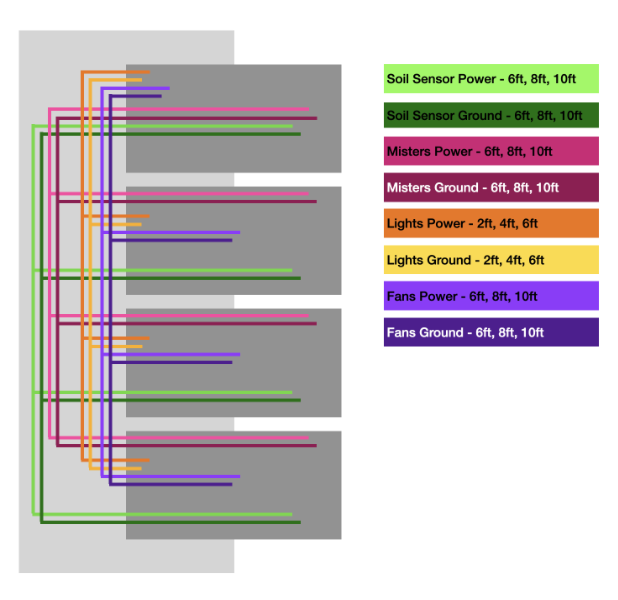
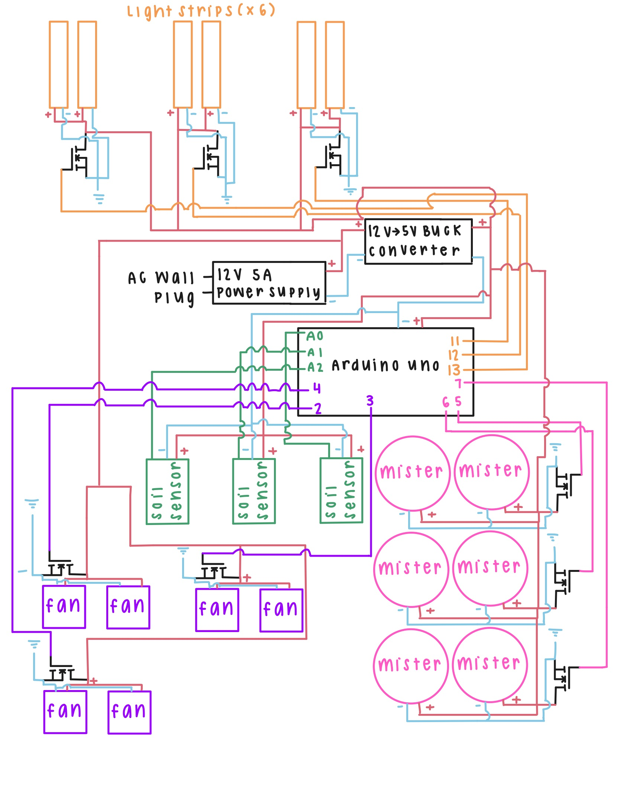

Overview
Course Context
Developed as part of Hacking the Apocalypse: Food, a course focused on designing and building systems for post-collapse scenarios with limited resources. Design constraints required salvaged materials, basic components, and off-grid power sources, excluding reliance on conventional supply chains or cloud-based services.
The course provided hands-on experience in constraint-driven engineering and resource optimization. Rather than specifying commercial parts, the design process emphasized creative problem-solving with available materials.
The Project
The Microgreen Grow Cabinet converts salvaged office furniture into an automated growing system powered by basic electronics, operating on voltages compatible with solar panels and batteries. It produces nutrient-dense food year-round without external agricultural infrastructure, addressing food security under resource constraints.

System Architecture
The filing cabinet contains four drawers with distinct functions. Drawers are wired in parallel, allowing independent control of each growth chamber. Water basins in drawers 1–3 supply the misters that irrigate the drawer below. The system operates on 12V DC power (drawing ~8A total), making it suitable for battery and solar panel operation.


Drawer Layout
- Drawer 1 Top drawer — houses all electronics, wiring, and power supply.
- Drawers 2–4 Three identical growth chambers, each with soil moisture sensors, misters, angled LED grow lights, and exhaust fans. Each drawer is watered by the basin in the drawer above it.
Chamber Systems
- MoistureSoil moisture sensors trigger automated watering cycles when soil drops below threshold.
- IrrigationMisters activate for 20 seconds per cycle when dry threshold is detected.
- LightingLED grow lights on angled mounts, always ON for demo purposes.
- VentilationExhaust fans run 5 seconds after each watering cycle to prevent mold and regulate humidity.
Circuit & Code
Arduino · Control System
#include "Arduino.h"
// --- Pin Definitions ---
#define SOIL1_PIN A0
#define MISTER1_PIN 5
#define FAN1_PIN 2
#define SOIL2_PIN A1
#define MISTER2_PIN 6
#define FAN2_PIN 3
#define SOIL3_PIN A2
#define MISTER3_PIN 7
#define FAN3_PIN 4
// --- Lights (always ON) ---
#define LIGHT1 11
#define LIGHT2 12
#define LIGHT3 13
// --- Threshold ---
#define DRY_THRESHOLD 400
void setup() {
Serial.begin(9600);
// Drawer pins
pinMode(MISTER1_PIN, OUTPUT); pinMode(FAN1_PIN, OUTPUT);
pinMode(MISTER2_PIN, OUTPUT); pinMode(FAN2_PIN, OUTPUT);
pinMode(MISTER3_PIN, OUTPUT); pinMode(FAN3_PIN, OUTPUT);
// Lights
pinMode(LIGHT1, OUTPUT);
pinMode(LIGHT2, OUTPUT);
pinMode(LIGHT3, OUTPUT);
// Everything OFF except lights
digitalWrite(MISTER1_PIN, LOW); digitalWrite(FAN1_PIN, LOW);
digitalWrite(MISTER2_PIN, LOW); digitalWrite(FAN2_PIN, LOW);
digitalWrite(MISTER3_PIN, LOW); digitalWrite(FAN3_PIN, LOW);
digitalWrite(LIGHT1, HIGH);
digitalWrite(LIGHT2, HIGH);
digitalWrite(LIGHT3, HIGH);
Serial.println("Lights ON. Monitoring all drawers...");
}
void runDrawerCycle(int drawerNum, int soilPin, int misterPin, int fanPin) {
int soilValue = analogRead(soilPin);
Serial.print("Soil ");
Serial.print(drawerNum);
Serial.print(": ");
Serial.println(soilValue);
if (soilValue > DRY_THRESHOLD) {
Serial.print("Drawer ");
Serial.print(drawerNum);
Serial.println(": Dry -> Misting for 20 seconds...");
digitalWrite(misterPin, HIGH);
delay(20000);
digitalWrite(misterPin, LOW);
Serial.print("Drawer ");
Serial.print(drawerNum);
Serial.println(": Misting done -> Running fan for 5 seconds...");
digitalWrite(fanPin, HIGH);
delay(5000);
digitalWrite(fanPin, LOW);
Serial.print("Drawer ");
Serial.print(drawerNum);
Serial.println(" cycle complete.");
}
}
void loop() {
runDrawerCycle(1, SOIL1_PIN, MISTER1_PIN, FAN1_PIN);
delay(1000);
runDrawerCycle(2, SOIL2_PIN, MISTER2_PIN, FAN2_PIN);
delay(1000);
runDrawerCycle(3, SOIL3_PIN, MISTER3_PIN, FAN3_PIN);
delay(2000);
}Bill of Materials
Assembly
1 · Acquire Materials
- 01Gather all components listed in the Bill of Materials.
2 · Prepare Filing Cabinet
- 2.1Waterproof drawers — remove all four drawers, apply caulk to inner corners and edges, seal the central drainage hole, apply 4–5 coats of Flex Seal to all inner surfaces (allow 24 hrs drying time), and test water-tightness by filling to 1–2 inches.
- 2.2Build raised platforms — cut acrylic sheets to fit drawer interior width, attach four wooden legs (~2 in tall) using hot glue, install platforms in drawers 1–3 to elevate grow trays above water basins.
- 2.3Install ventilation fans — mark fan mounting positions on cabinet exterior (drawers 2–4), drill mounting holes, use Dremel with metal cutting wheel to create ventilation openings, and mount all six fans securely.
- 2.4Install power entry point — drill hole in cabinet back panel near the top, sized for power cable entry.
- 2.5Modify drawer rails — remove inner rails from drawers 1–3, use Dremel to cut out center horizontal brace that would interfere with misters, reinstall modified rails.
- 2.6Mister mounting points — drill two 1-inch diameter holes in bottom of drawers 1–3, positioned diagonally opposite for optimal water coverage.
- 2.7Light mounting rails — cut 2×2 wood pieces diagonally to create angled mounting surfaces, pre-drill holes to prevent splitting, mount angled rails inside drawers 2–4 using wood screws.
3 · Electronics Assembly
- 3.1Build control circuit — solder MOSFETs, resistors, and diodes to breadboards per circuit diagram. Create power distribution network with buck converter for Arduino. Install all electronics in top drawer.
- 3.2Install misters — bypass mister control unit buttons by soldering across terminals, assemble atomizer heads, insert atomizers through pre-drilled holes face-down, connect paired misters in parallel and wire to breakout boards. Ensure adequate wire slack for full drawer extension.
- 3.3Install lighting — connect LED strips to wiring harness, route through cabinet back to respective drawers, adhere strips to angled mounting rails.
- 3.4Install fans — connect fan wiring through cabinet back panel, route carefully to avoid drawer interference, connect to control board.
- 3.5Install moisture sensors — fill six grow trays with potting soil (two per chamber), insert moisture sensors to 1-inch depth, wire sensors to Arduino inputs.
- 3.6Upload control code — connect Arduino via USB, upload code from GitHub repository, test all systems before final assembly.
4 · Final Assembly & Operation
- 01Install grow trays with sensors into drawers 2–4.
- 02Fill water basins in drawers 1–3.
- 03Plant microgreen seeds and close drawers.
- 04Connect power supply. System automatically begins monitoring and control cycles. Refill water basins every 2–3 days. Harvest in 7–14 days.
Future Improvements
Grow Structure
While a filing cabinet provides aesthetic appeal and demonstrates resourcefulness, the sliding drawer mechanism adds significant complexity. Future implementations might consider steel rack systems with easier access and mounting, dark rubber lining and camo netting for light control, and stationary mounting to eliminate the need for wire slack in drawer-mounted components.
Irrigation System
The current upside-down mister configuration carries risk of electronics falling into water if the platform fails, atomizers prone to failure when submerged, and manual refilling for each basin. Recommended alternative: garden misters on stationary rails connected to an external reservoir, controlled via solenoid valves. This eliminates short-circuit risk, manual refilling, and atomizer failure modes.
Waterproofing
Flex Seal proved inadequate for sealing drawers. Recommendation: use caulk exclusively, or implement an external water supply to eliminate sealed basins entirely.
Drainage
Add drainage holes in grow tray bottoms with channels directing excess water away from plants. If drainage returns to water basin, install filtration to prevent particulate damage to wicks and misters.
References
- Balik, S., Elgudayem, F., Dasgan, H.Y. et al. Nutritional quality profiles of six microgreens. Sci Rep 15, 6213 (2025). doi.org/10.1038/s41598-025-85860-z